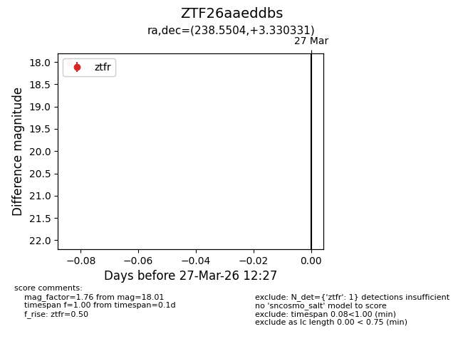
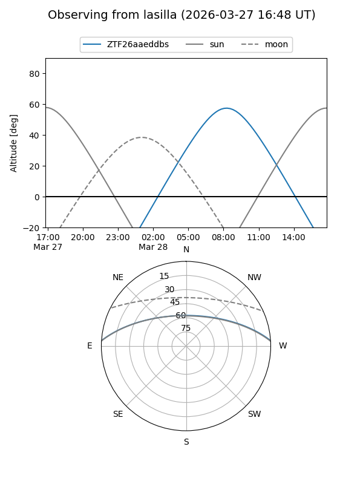
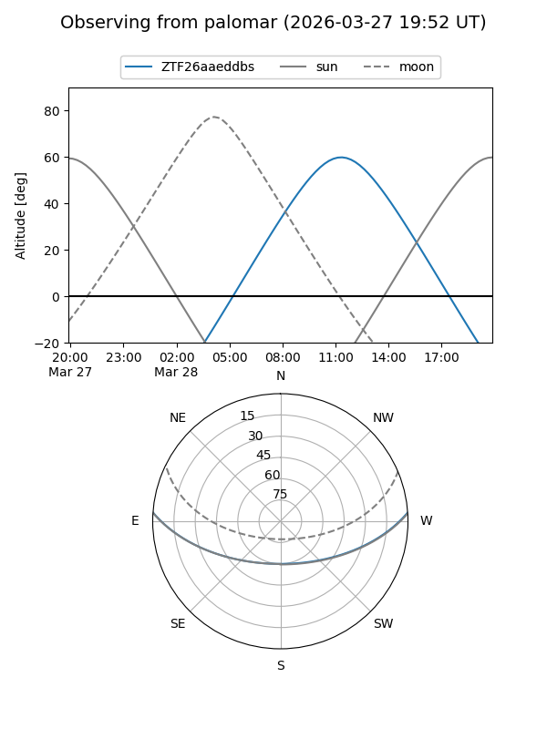

ZTF26aaeddbs
Target ZTF26aaeddbs at 2026-03-27 12:31
Aliases and brokers:
FINK: link
Lasair: link
ALeRCE: link
alt names
ZTF26aaeddbs (ztf,fink_ztf)
Coordinates:
equatorial (ra, dec) = 238.5504,+3.33033
equatorial (HMS+DMS) = 15:54:12.10,+03:19:49.19
galactic (l, b) = (12.4893,+40.32493)
Flags:
Photometry:
last ztfr=18.01
1 ztfr detections
Lightcurve

Visibility


Additional plots